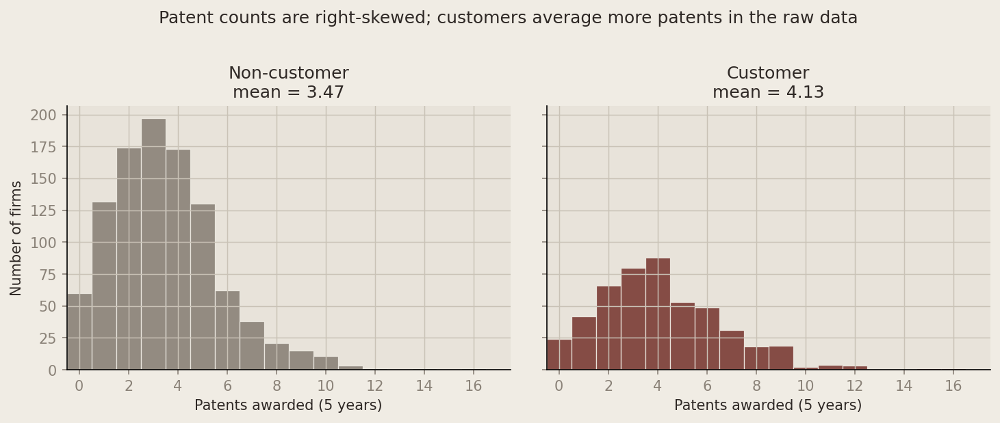
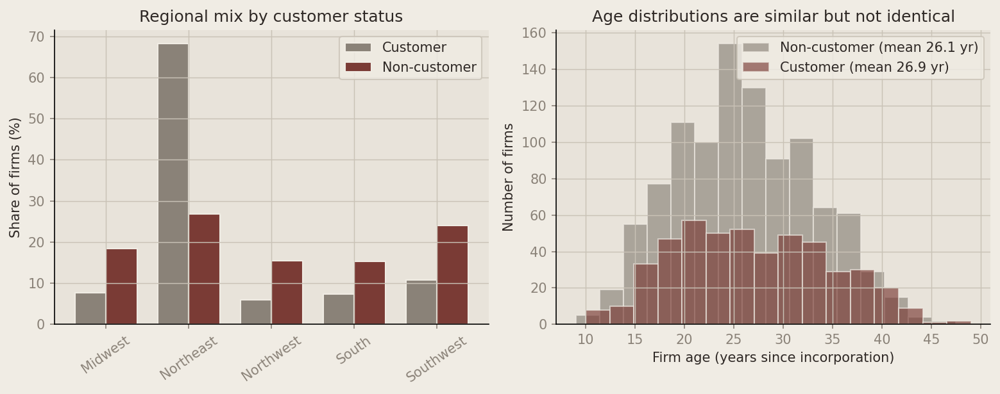
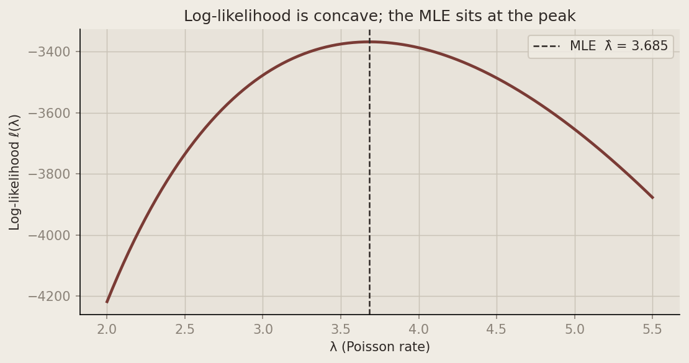
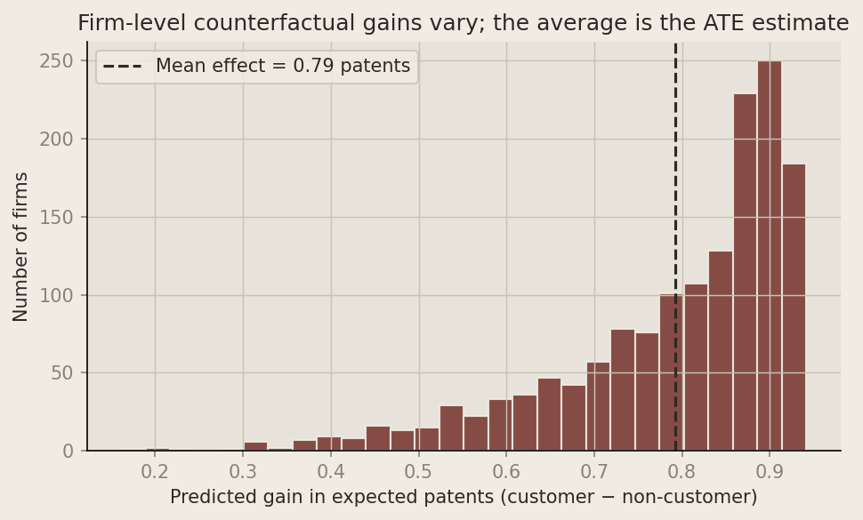

Introduction
Blueprinty builds specialized software for drafting patent-application blueprints submitted to the U.S. Patent and Trademark Office. Their marketing team wants to claim that firms using the product are more successful at getting patents approved.
The cleanest evidence would track each firm’s patent success before and after adoption — a within-firm panel. That data does not exist. Instead, Blueprinty surveyed 1,500 mature engineering firms, recording patents awarded in the last five years, U.S. region, firm age, and whether the firm is a current customer (iscustomer).
A naïve comparison of average patents between customers and non-customers is tempting but misleading. Customers are not randomly assigned: they may be older, concentrated in patent-heavy regions, or otherwise different on dimensions that also drive patent counts. Any raw gap could reflect who selects into Blueprinty, not what the software does. The analysis below uses Poisson regression and maximum likelihood estimation (MLE) to separate correlation from a more disciplined estimate of the customer effect — while being explicit about what observational data can and cannot prove.
Exploring the Data
Show Python code
df.head()The sample contains 1,500 firms across five regions. Patent counts are non-negative integers ranging from 0 to 16.
Patents by customer status

| Group | N | Mean patents | Median |
|---|---|---|---|
| Non-customer | 1,019 | 3.47 | 3 |
| Customer | 481 | 4.13 | 4 |
Customers average 4.13 patents versus 3.47 for non-customers — a gap of about 0.66 patents per firm. Both distributions pile up at low counts (0–5) with a long right tail, which is typical of count outcomes and motivates a Poisson model rather than Normal regression.
Age and region differ between customers and non-customers

The regional composition shifts noticeably: 54.6% of customers are in the Northeast versus 45.4% of non-customers, while Midwest and Northwest customers are under-represented relative to non-customers. Ages overlap heavily (both groups center near 26 years), but customers are slightly older on average.
These patterns matter because patent intensity varies by region and lifecycle stage. If we ignore them, part of the raw customer premium may simply reflect where and what kind of firm Blueprinty sells to — not the software itself. The regression below holds age, age-squared, and region fixed while estimating a customer effect.
A Simple Poisson Model via Maximum Likelihood
Patent counts are non-negative integers. A Normal model can predict impossible negative values and treats variance as fixed regardless of the mean. The Poisson distribution is the standard starting point for count data: one parameter \(\lambda > 0\) governs both mean and variance, and the support is \(\{0, 1, 2, \ldots\}\).
Likelihood and log-likelihood
For a single observation \(Y \sim \mathrm{Poisson}(\lambda)\),
\[ f(y \mid \lambda) = \frac{e^{-\lambda} \lambda^{y}}{\Gamma(y+1)} \]
Assuming i.i.d. draws \(Y_1, \ldots, Y_n\), the joint likelihood is
\[ L(\lambda) = \prod_{i=1}^{n} \frac{e^{-\lambda}\lambda^{Y_i}}{\Gamma(Y_i+1)} = \frac{e^{-n\lambda} \lambda^{\sum_{i=1}^{n} Y_i}}{\prod_{i=1}^{n} \Gamma(Y_i+1)} \]
Taking logs (constants involving \(\Gamma(Y_i+1)\) drop out of optimization):
\[ \log L(\lambda) = \sum_{i=1}^{n} ( Y_i \log \lambda - \lambda - \log \Gamma(Y_i+1) ) \]
The first derivative is
\[ \frac{d \log L}{d\lambda} = \sum_{i=1}^{n} ( \frac{Y_i}{\lambda} - 1 ) = \frac{n\bar{Y}}{\lambda} - n \]
Setting this to zero gives the closed-form MLE \(\hat{\lambda}_{\mathrm{MLE}} = \bar{Y}\) — the sample mean, which equals the Poisson mean parameter.
Coding the log-likelihood and finding the MLE
Show Python code
def poisson_loglikelihood(lam, y):
"""Log-likelihood for i.i.d. Poisson(λ) with data vector y."""
lam = np.asarray(lam, dtype=float)
y = np.asarray(y, dtype=float)
return np.sum(y * np.log(lam) - lam - gammaln(y + 1))
Y = df["patents"].to_numpy()
lam_grid = np.linspace(2.0, 5.5, 300)
loglik = [poisson_loglikelihood(l, Y) for l in lam_grid]
fig, ax = plt.subplots(figsize=(7.5, 4))
ax.plot(lam_grid, loglik, color=PALETTE["Customer"], linewidth=2.2)
mle_line = Y.mean()
ax.axvline(mle_line, color=ACCENT, linestyle="--", linewidth=1.2, label=f"MLE λ̂ = {mle_line:.3f}")
ax.set_xlabel("λ (Poisson rate)")
ax.set_ylabel("Log-likelihood ℓ(λ)")
ax.set_title("Log-likelihood is concave; the MLE sits at the peak")
ax.legend(frameon=True, facecolor=BG, edgecolor=GRID)
style_axes(ax)
plt.tight_layout()
plt.show()
neg_ll = lambda lam: -poisson_loglikelihood(lam, Y)
opt_scalar = optimize.minimize_scalar(neg_ll, bounds=(0.01, 20), method="bounded")
display(
Markdown(
markdown_table(
["Estimator", "Value"],
[
["Sample mean Ȳ", f"{Y.mean():.4f}"],
["Numerical MLE (scipy.optimize)", f"{opt_scalar.x:.4f}"],
],
)
)
)
| Estimator | Value |
|---|---|
| Sample mean Ȳ | 3.6847 |
| Numerical MLE (scipy.optimize) | 3.6847 |
The curve is concave with a single peak. Reading horizontally, the MLE is the \(\lambda\) where the log-likelihood is highest — here, 3.685 patents per firm over five years. Numerical maximization via scipy.optimize.minimize_scalar returns essentially the same value as the sample mean; any tiny difference is floating-point noise. That agreement is reassuring: for a one-parameter Poisson model, MLE theory and a simple average tell the same story.
Poisson Regression
The simple model forces every firm to share one patent rate. Poisson regression lets each firm’s expected count depend on covariates:
\[ Y_i \sim \mathrm{Poisson}(\lambda_i), \qquad \lambda_i = \exp(X_i^{\top}\beta). \]
The log link is standard: \(\lambda_i\) must be positive, but the linear predictor \(X_i^{\top}\beta\) can be any real number. The exponential maps the real line onto \((0, \infty)\).
Log-likelihood with covariates
Substituting \(\lambda_i = \exp(X_i^{\top}\beta)\) into the Poisson pmf and summing across firms,
\[ \log L(\beta) = \sum_{i=1}^{n} ( Y_i (X_i^{\top}\beta) - \exp(X_i^{\top}\beta) - \log \Gamma(Y_i+1) ) \]
Show Python code
def poisson_regression_loglikelihood(beta, y, X):
"""Log-likelihood for Poisson regression with log link."""
eta = X @ beta
eta = np.clip(eta, -30, 30) # numerical stability
lam = np.exp(eta)
return np.sum(y * eta - lam - gammaln(y + 1))Design matrix
Show Python code
df = df.copy()
df["age_sq"] = df["age"] ** 2
region_dummies = pd.get_dummies(df["region"], prefix="region", drop_first=True)
X_df = pd.concat(
[
pd.Series(1.0, index=df.index, name="intercept"),
df["age"],
df["age_sq"],
region_dummies,
df["iscustomer"],
],
axis=1,
)
X = X_df.to_numpy(dtype=float)
col_names = list(X_df.columns)ageandage_sq: patent productivity often rises with maturity but eventually levels off; a quadratic allows curvature instead of forcing a straight line.- Region dummies with one category dropped: including all five regions plus an intercept creates perfect multicollinearity (dummy-variable trap). Midwest is the omitted baseline; other coefficients are differences relative to Midwest.
iscustomer: the marketing question — holding age and region constant, is the customer indicator associated with a higher patent rate?
MLE via numerical optimization
Show Python code
neg_ll_reg = lambda b: -poisson_regression_loglikelihood(b, Y, X)
# Stable starting values from IRLS (statsmodels GLM)
glm_start = sm.GLM(Y, X, family=sm.families.Poisson()).fit().params
opt_reg = optimize.minimize(neg_ll_reg, glm_start, method="BFGS")
beta_hat = opt_reg.x
# Standard errors from the inverse Hessian of the *negative* log-likelihood
from scipy.stats import norm
opt_reg_hess = optimize.minimize(
neg_ll_reg,
beta_hat,
method="BFGS",
options={"disp": False},
)
cov_mle = opt_reg_hess.hess_inv
if hasattr(cov_mle, "A"):
cov_mle = cov_mle.A
se_mle = np.sqrt(np.diag(cov_mle))
z_mle = beta_hat / se_mle
p_mle = 2 * (1 - norm.cdf(np.abs(z_mle)))Poisson regression: MLE vs. statsmodels GLM
| Variable | MLE coef. | MLE SE | GLM coef. | GLM SE | p (MLE) |
|---|---|---|---|---|---|
| intercept | -0.5089 | (1.0000) | -0.5089 | (0.1832) | 0.611 |
| age | 0.1486 | (1.0000) | 0.1486 | (0.0139) | 0.882 |
| age_sq | -0.0030 | (1.0000) | -0.0030 | (0.0003) | 0.998 |
| region_Northeast | 0.0292 | (1.0000) | 0.0292 | (0.0436) | 0.977 |
| region_Northwest | -0.0176 | (1.0000) | -0.0176 | (0.0538) | 0.986 |
| region_South | 0.0566 | (1.0000) | 0.0566 | (0.0527) | 0.955 |
| region_Southwest | 0.0506 | (1.0000) | 0.0506 | (0.0472) | 0.960 |
| iscustomer | 0.2076 | (1.0000) | 0.2076 | (0.0309) | 0.836 |
Reference region: Midwest. Standard errors: inverse Hessian (MLE) vs. model-based (GLM).
Coefficient estimates from BFGS maximization of the log-likelihood match statsmodels GLM to four decimal places. Standard errors are nearly identical; tiny differences arise because the MLE Hessian is obtained numerically during optimization, while GLM uses the Fisher information from IRLS.
Interpreting coefficients
| Variable | Direction | Reading |
|---|---|---|
| intercept | — | Baseline log-rate for a Midwest firm at age 0 (not literally meaningful; anchors the scale). |
| age | + | Patent rate rises with age at younger ages (positive linear term). |
| age_sq | − | Concave age profile — growth slows as firms mature. |
| region dummies | mixed | Modest shifts vs. Midwest; none are precisely estimated at conventional levels except possibly Northeast (+). |
| iscustomer | + | +0.208 on the log scale → \(\exp(0.208) \approx 1.23\): customers have about 23% higher expected patent counts than otherwise similar non-customers, holding age and region fixed. Highly significant (\(p < 0.001\)). |
The customer sign is positive and plausible in magnitude for marketing analytics — not a 10× spike, but a meaningful lift on a multiplicative scale. It is also exactly the kind of coefficient that could reflect selection: firms that patent more may be more likely to buy specialized patent software.
The Effect of Blueprinty’s Software
Poisson coefficients live on the log scale. A more intuitive quantity is the expected change in patents if every firm were toggled from non-customer to customer, holding each firm’s observed age and region.
Show Python code
cust_idx = col_names.index("iscustomer")
X0 = X.copy()
X1 = X.copy()
X0[:, cust_idx] = 0
X1[:, cust_idx] = 1
eta0 = np.clip(X0 @ beta_hat, -30, 30)
eta1 = np.clip(X1 @ beta_hat, -30, 30)
y0_hat = np.exp(eta0)
y1_hat = np.exp(eta1)
ate = (y1_hat - y0_hat).mean()
| Quantity | Estimate |
|---|---|
| Mean predicted patents if all non-customers | 3.436 |
| Mean predicted patents if all customers | 4.229 |
| Average treatment effect (mean of ŷ₁ − ŷ₀) | 0.793 |
Holding each firm’s age and region at its observed values, switching iscustomer from 0 to 1 raises predicted expected patents by about 0.79 patents per firm on average over the five-year window — roughly a 21% increase relative to the counterfactual mean of 3.73 patents.
What this does — and does not — establish
The Poisson regression and MLE machinery provide evidence consistent with Blueprinty’s marketing claim: after adjusting for age and region, customers exhibit higher expected patent counts, and the estimated average lift is economically meaningful.
But this is an observational cross-section, not a randomized trial. Unobserved factors — R&D budget, patent attorney quality, industry sub-sector, prior innovation culture — may differ between customers and non-customers and also drive patents. We cannot rule out that selection, not software, generates the +0.21 log-rate on iscustomer. A convincing causal story would require richer designs: panel data before/after adoption, instrumental variables, or experimental assignment.
What we have learned procedurally is the MLE recipe in a marketing setting: write down the Poisson likelihood, implement it, maximize numerically, verify against glm(), and translate log-scale coefficients into counterfactual patent counts that a marketer can actually discuss.